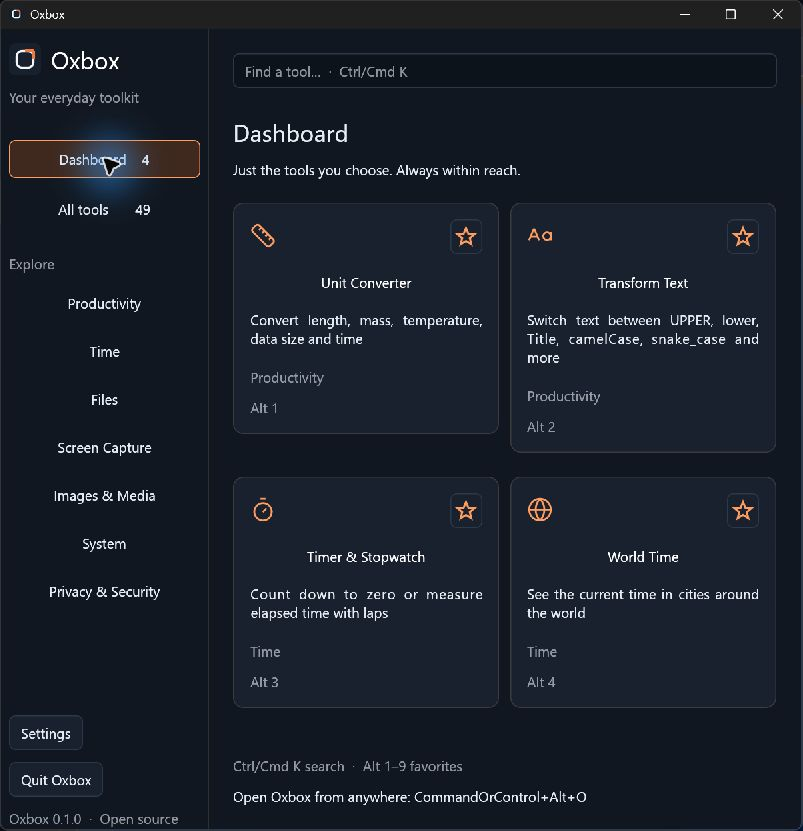

Find it. Run it. Carry on.
Open the launcher with Ctrl + Alt + O, or ⌘ + Option + O on macOS. Your dashboard shows only your favorites; search reaches the full toolbox.
THE DESKTOP TOOLBOX
For the little jobs that interrupt your day. Find a tool, get it done, and get back to what matters.
Open from anywhere with Ctrl + Alt + O
⌘ + Option + O on macOS
IN DEVELOPMENT v0.1 installers are in private draft review.
Check release status

{{TOOL_COUNT}} tools in source
{{CATEGORY_COUNT}} useful categories
MIT / Apache-2.0 open source
Windows first macOS & Linux builds
A LITTLE MORE FLOW
Small utilities belong within reach. Oxbox brings them into a searchable tray app, with favorites for the ones you use most.
Open the launcher with Ctrl + Alt + O, or ⌘ + Option + O on macOS. Your dashboard shows only your favorites; search reaches the full toolbox.
Keep a window visible, set a timer, or prepare for a presentation. Choose exactly which controls to turn on. Installed copies can stay ready in your tray from login.
Verify a checksum, resize a batch of images, build an archive, or find duplicate files—all from one place.
FROM INPUT TO FINISHED TASK
Start with the work in front of you. Keep useful options for next time, inspect the result, and choose when to apply or share it.
PREPARE YOUR FILES
Batch Rename combines literal replacements, prefixes, suffixes and numbering. Inspect each old and new path before applying the batch. Guarded Undo checks that those files still match.
Save resize, checksum, timer or unit options as a named preset. Input files, destinations and copied text stay out of presets.
Find Batch RenameREVIEW BEFORE SHARING
Screenshot capture defaults to an in-memory review. Crop, draw arrows, add a label or replace a region with solid redaction. Inspect the flattened preview before saving a new PNG or copying it.
Bitmap labels currently support printable ASCII. OCR is a separate explicit action using an installed offline engine. Direct raw saving remains optional; later redaction does not change earlier exports.
Find ScreenshotHANDLE THE SMALL STUFF
Use the launcher search for arithmetic, unit conversion or a configured timer. A timer opens ready for you to start. In Clipboard History, the separate Clean pasted text tab trims lines and whitespace with a preview before Copy.
= 12 * 812 inches to cmtimer 10mOpen search with Ctrl/⌘ + K. Enter copies an arithmetic result or opens the configured tool. Text cleanup never starts history monitoring; after Copy, switch to your destination and paste.
Find text cleanupLOCAL MAINTENANCE, WITH A REVIEW
Inspect storage, startup entries, known cache locations and browser extensions. Findings are a starting point for a review, not a performance score or permission to delete.
InspectRead a bounded local report.
ReviewCheck exact paths, entries and limits.
ConfirmApply only the selected action.
Review current-user startup values and narrowly identified obsolete HKCU application paths. Backups precede supported changes; guarded restore refuses to replace a newer entry.
Review known cache locations and current-user LaunchAgents. Application removal is scoped to user-owned bundles; loaded jobs, system services and modern login items remain separate OS concerns.
Review known cache locations and user XDG autostart entries. Portable AppImages have a separate user-owned removal path. Installed application entries are read-only; package managers stay in charge of packages.
Cache cleanup uses selected allowlisted locations and Trash. Browser history, passwords and cookie databases are excluded. File Shred is a separate, explicitly confirmed permanent action; SSDs, snapshots and backups prevent a guaranteed-erasure claim. Maintenance reminders are review-only.
Read the maintenance guideTHE FULL TOOLBOX
{{TOOL_COUNT}} tools implemented in source. Platform labels describe available code paths, not completed runtime certification. Read the validation record.
Try a broader search, or choose another category or platform.
FFmpeg and Tesseract are optional, user-installed providers. They are not bundled. Hardware, installed codecs, language packs and OS permissions affect availability.
BUILT IN THE OPEN
Rust powers the tool logic and native egui interface. Each utility has its own core module and concrete native form, with one shared catalogue for the app and website. Contributions can stay focused.
GOOD TO KNOW
The Windows installers are currently held in a private draft for review. Public downloads are not available yet. You can inspect the source and build the development branch.
Release statusWindows 10/11 is the primary target. The native source includes macOS and Linux build paths; runtime acceptance on those systems remains open. Tools that depend on OS APIs have narrower platform support. Use the platform filter above to inspect the source capability map.
Tool commands use local files and OS capabilities. Currency rates can be imported locally; a manual ECB refresh requires explicit opt-in. No application telemetry is implemented.
The selected native app does not embed a browser. Earlier WebView2 HTTPS findings apply to the retained legacy host. Bounded Windows production observations found no owned TCP or UDP endpoints during the recorded startup, idle, tool and tray/Quit checks. DNS, other providers and other operating systems still need acceptance; finite observations do not prove zero network traffic.
Read the privacy findingsOpen or hide the launcher from anywhere with Ctrl + Alt + O on Windows/Linux or ⌘ + Option + O on macOS. The global shortcut is configurable, and other applications may already use it.
Inside Oxbox, use Ctrl/⌘ + K to search, Alt + 1–9 to open a favorite, and Ctrl/⌘ + Q to quit the app.
A fresh installed Windows or macOS copy enables login startup on first launch. Later logins open quietly in the tray; you can turn startup off in Settings. Upgrades preserve existing choices, including disabled startup. Development and isolated QA profiles do not register login startup.
Mouse Activity, clipboard history and recordings still require explicit Start. Portable Linux archives leave startup off until you choose.
FFmpeg and Tesseract are not bundled. Recording, media conversion and camera tools use your local FFmpeg installation. Windows OCR uses installed OS language packs; Tesseract is an alternative local OCR provider.
Start with a local report, inspect exact paths or entries, then confirm a selected action. Cache cleanup uses known allowlists and Trash. Startup and narrow Windows registry changes use backups and guarded restore.
Browser history, passwords and cookie databases are excluded. Browser extension review is read-only. File Shred is a separate permanent action with typed confirmation; it cannot guarantee erasure from SSDs, snapshots or backups. Reminders never apply cleanup automatically.
Maintenance scope and recoveryOxbox is licensed under MIT OR Apache-2.0. You can inspect, modify and contribute to the code under those terms. Third-party dependencies retain their own licenses.
Dependency and license notesTry a supported tool in a test environment, report a clear reproducible issue, improve documentation, or contribute a focused change. Manual platform testing and release reviews are useful contributions too.
Contribution guideExplore the source. Help build the next useful thing.